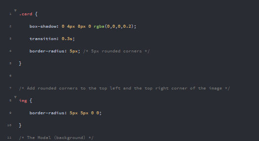
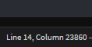
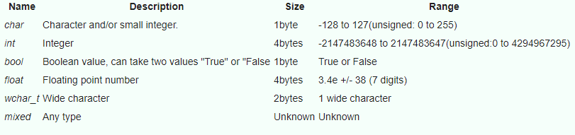
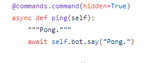

Implementation Types of CSS
How do HTML files access CSS?
To bring those examples into light:This is blue, with a small margin. In other words, an example of Inline text.
This is an example of that (Horrible looking) Internal CSS.
See how they have changed, due to the CSS? In fact, the cards (I.e. what you are reading this from now) all rely on CSS. Code for the cards. (External Example)
But in larger systems of CSS, like bootstrap, '.min' files exist which contain all of bootstraps CSS in a conveinient small package. Not good for human reading, but for the device you are viewing the site on, its perfect.
Thats a lot of code for 14 lines.
Just remember:
The CSS box model.
CSS, Also known as Cascading Style Sheet or "WHY IS IT NOT WORKING" before realising you forgot to link it, is a great way of changing content flow colour... And just about everything.
As the poster shows, a traditional CSS box Model Contains its content within padding, border, and a margin. These are all adjustable, and are usually just used to ensure everything is spaced out normally.
For instance, we could set div (therefore anything in a div too) to always be 300px wide, have a 25px thick green border, and add 25px to margin and padding, like so:
Or, if I wanted to only affect one div...
Alternatively, we can create a custom class in the internal or external CSS that we can apply to whichever div's we choose.
But what about that code in action? Here it is, inline:
Hello there!
Fundamentals of a scripting language
Scripting Languages allow users to write a program for a computer to interpret and run. Computers can only understand code, so scripting languages tend to be the middle ground between machine-friendly code and human-readable.
Variables are the "bread and butter" of any coding language. They can store data to be used later, whether its for a calculation, to print specific text, to be saved to a file, or launched into the infinite void of space.(i.e. deleted)
Variables come in all sorts of formats, and their formats can be changed on the fly. For instance:
Its worth noting that by default, most things are stored as "strings"(not shown on the image) Which can store virtually anything, and treats it as plain text.
Functions are also a commonly used thing within a scripting language to do... anything. Chances are, everything you do will be contained within a function of some sort.
If we take Python as an example, you can either 'def'(define) a function, or use 'async def'(which allows the function to be ran simultaneously with others)
For example, if we were to take this code Snippet from "Red-Discord Bot":
 From here.The code, in short:
Although there is more, I've only highlighted the main parts. And when the function is called...
Implementation types of CSS
Introduction.
In this section I am going to assess different implementation styles for CSS. The different implementation styles in which I am going to talk about include: Internal Style Sheets, External Style sheets and Inline Style sheets. CSS (Cascading Style Sheets) allows a web developer to design a website in terms of the colour and design. CSS does not "create" anything all it does it decorates and align stuff on the web page. HTML (Hyper Text Mark-up Language) is responsible for the construction and the total output of a web page. As mentioned earlier there are three sections in HTML and I will go in more detail below. The main job of styles is to define what the HTML elements will look like; therefore CSS is built into all HTML tags.
Which one to use?
There’s 3 types of CSS to choose from - Inline, which is quick and simple, Internal, which affects an entire page, and External, which can make large changes on demand.
Inline CSS
INLINE CSS- Here, the CSS code is in the line it is to be applied on. Quick, easy, and compact, with good readability - it's more for one-off pieces rather than an entire page, but it can take priority over the other css formats. Also since it's inline, you don't have any extra files to deal with, and you don't have to tweak an internal css in your header tag either. It's also pretty quick, and great for testing! However, it's going to get tiring if you have inline css on every element, and the priority of inline means that it can overwrite styles set by internal and external css. At that point, use a different method unless you have a good reason.
The text is now blue, and looks indented. Neat.
Internal CSS
An Internal style sheet means the code is stored in the header section of the site. This is much better than inline because any CSS used within the page will inherit the formatting, Like making all the text red, or making every single letter link to the hitchhiker's guide to the galaxy. Internal is useful as it allows people to test the site’s css quickly and effectively. It also means that, unlike inline, you don’t need to add css to every single element. Mind your loading times though, as internal CSS can slow you down to the pace of a snail in treacle if not careful. It can also make the websites file size bigger, which will then also contribute to wondering if you need to upgrade your internet plan for the 3rd time this month.
External
An external Style sheet is when the css code is stored in another file, which can then be loaded into the html file with this magic line:
See? The External file is then set up almost identically to how the internal one looks, but without any html. After all ,they aren’t the same thing. An external style sheet can be written in any editor program. The file should not contain HTML tags and should be saved with a .CSS extension. Yes, it does save space, and it also means a cleaner code in general, but External is not really needed for small, single page things.